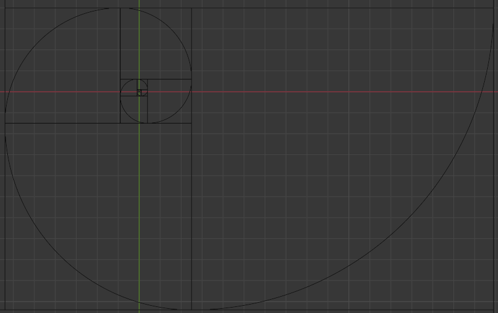
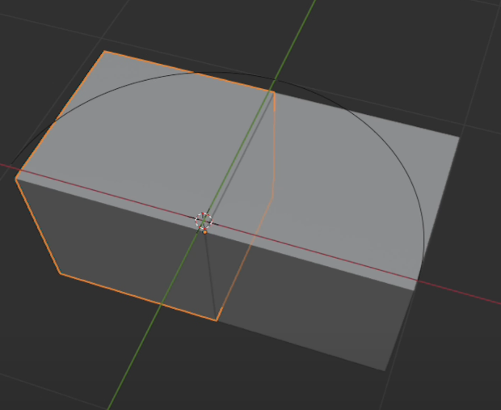
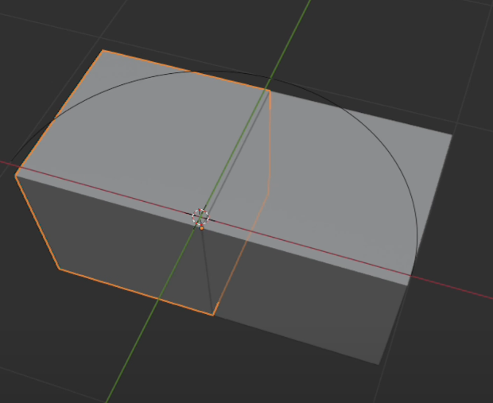
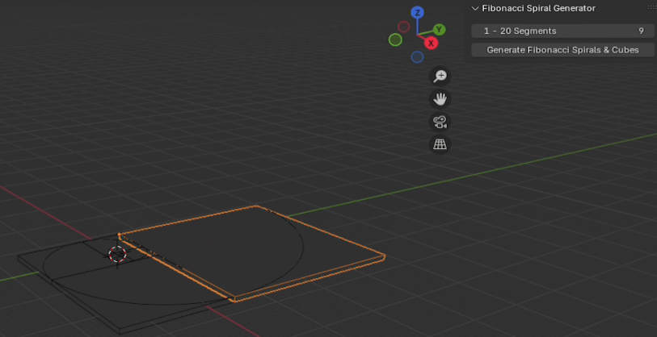
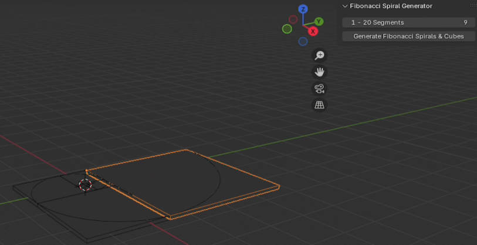

Overview
The Fibonacci Spiral & Cube Generator is a Blender add-on that allows you to effortlessly create Fibonacci-inspired spirals and cube patterns using the golden ratio. Designed for artists, animators, and creators who want to add mathematically precise beauty to their projects.
Features
- Generate customizable Fibonacci spirals with up to 20 segments.
- Dynamic toggles to hide or display spirals and cubes.
- Accurate representation of the golden ratio in a user-friendly panel.
- Perfect for procedural art, motion graphics, and architectural visuals.
Installation
- Download the add-on ZIP file from Blender Market.
- Open Blender and navigate to Edit → Preferences → Add-ons.
- Click Install... and select the downloaded ZIP file.
- Search for "Fibonacci Spiral & Cube Generator" and enable the add-on.
- Save preferences to ensure the add-on remains active.
How to Use
- Open a new or existing Blender project.
- Go to the 3D Viewport and locate the add-on panel in the right-hand sidebar under the "Fibonacci" tab.
- Set the number of Fibonacci segments (1-20).
- Click the Generate Fibonacci Spiral button.
- Use the checkboxes to hide or display cubes and spirals as needed.
Example Workflow
Below is an example workflow to quickly create a Fibonacci spiral:
1. Set segments: 10
2. Click "Generate Fibonacci Spiral"
3. Use the "Hide Spiral" toggle to focus on cubes
4. Export the design as needed for further edits
2. Click "Generate Fibonacci Spiral"
3. Use the "Hide Spiral" toggle to focus on cubes
4. Export the design as needed for further edits
Gallery
Explore the beautiful and precise patterns you can create with the add-on:
 

 

Video Demonstration
Watch how the Fibonacci Spirals & Cubes Generator works in Blender:
Compatibility
This add-on is compatible with the following Blender versions:
- Blender 4.3
Support
If you encounter any issues or have questions about the add-on, feel free to reach out through Blender Market's messaging system. I am here to help you make the most of this tool.